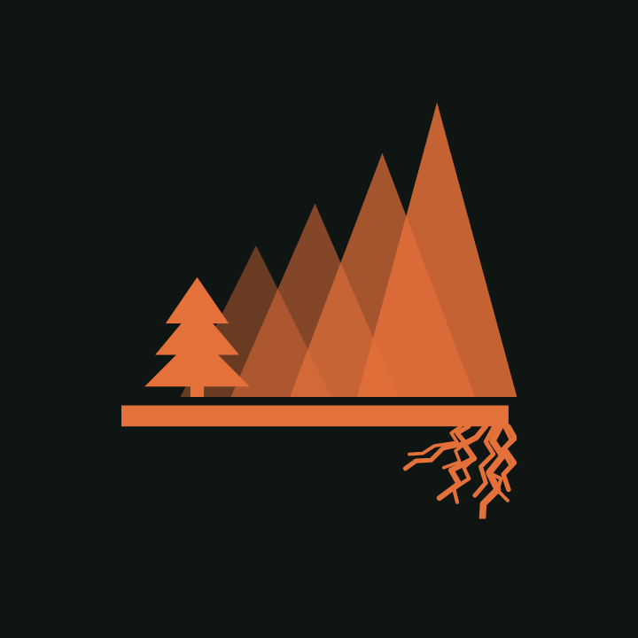
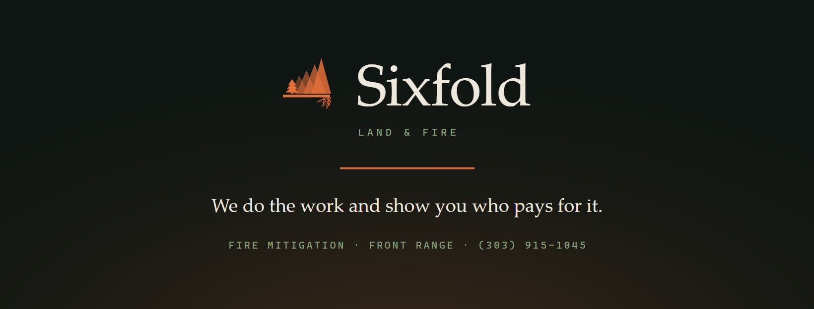
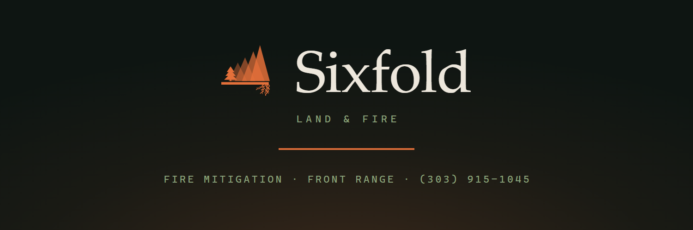
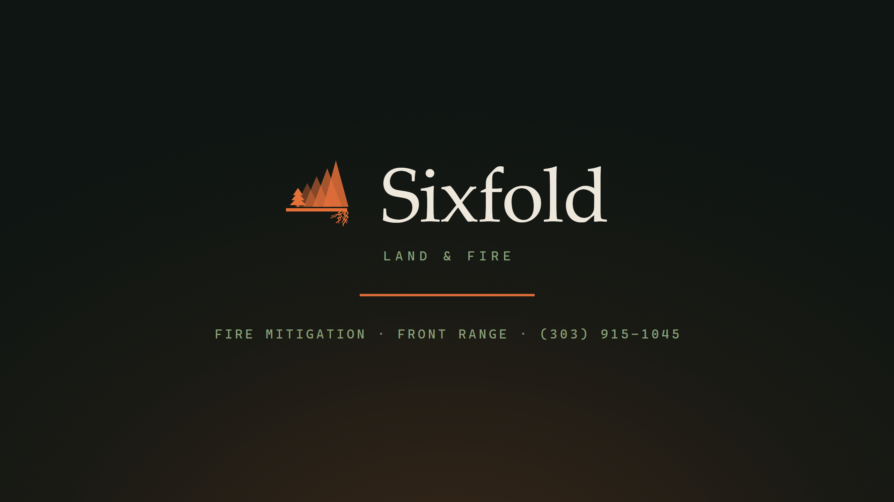
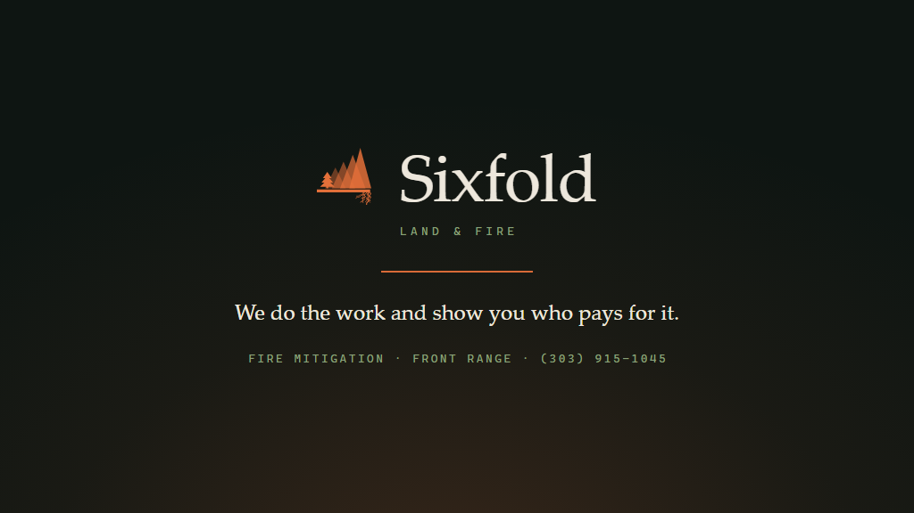
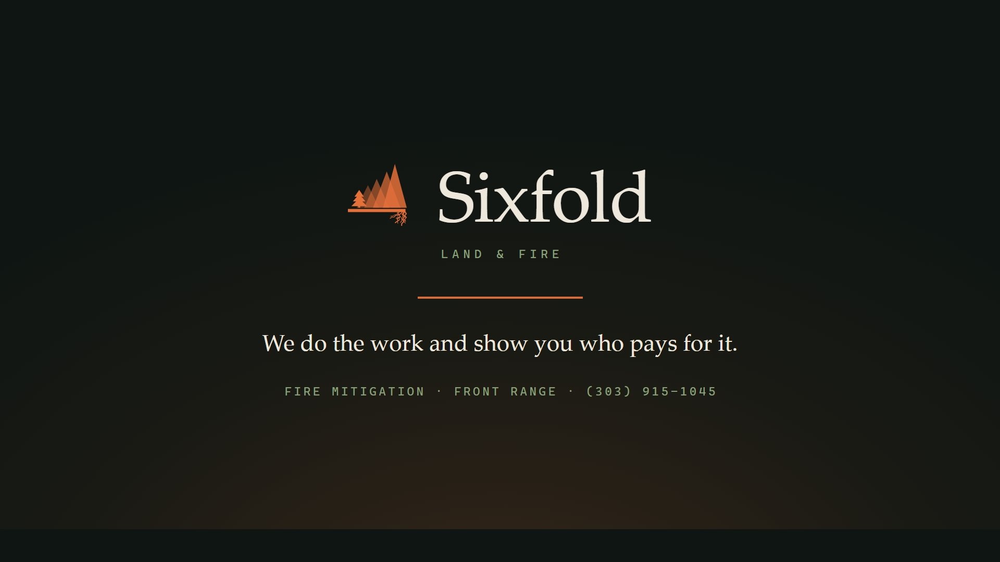
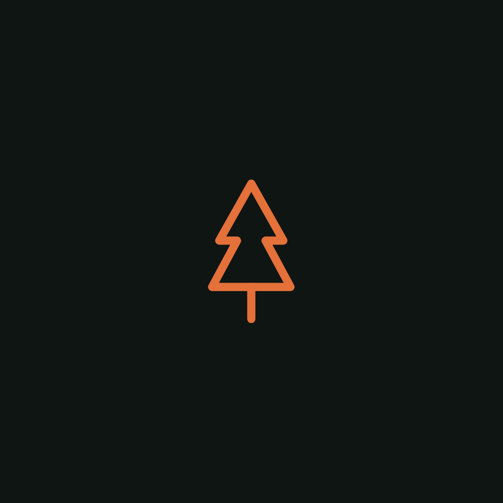
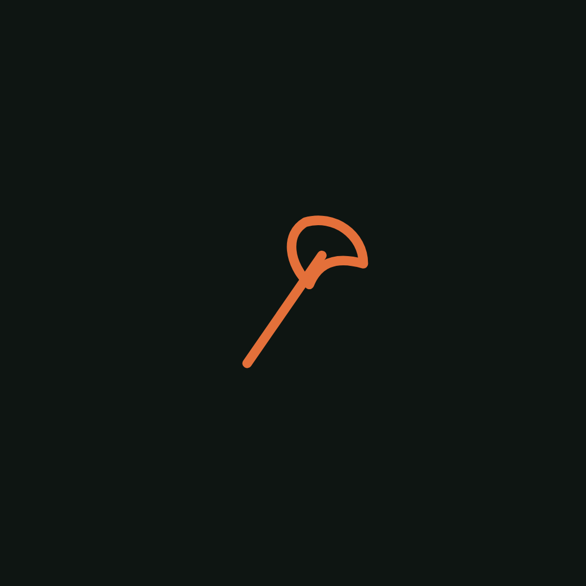
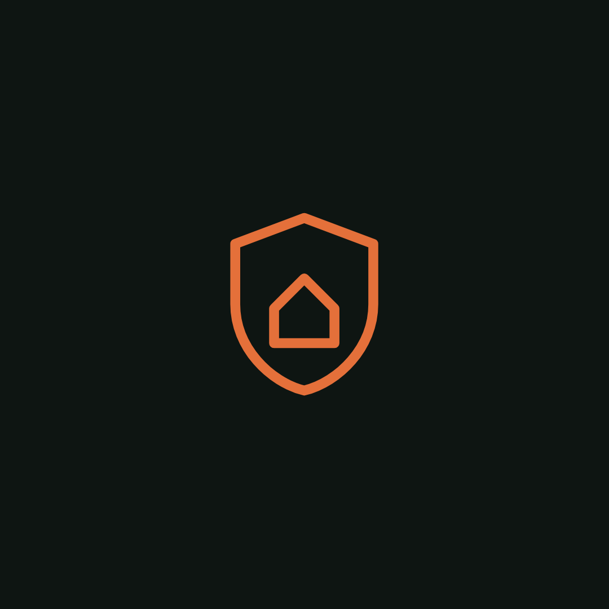

Rendered by build-social.mjs. Draft & stage only — no account created, nothing uploaded.
Contact line carries the new number (303) 915-1045. Field-by-field instructions in UPLOAD-GUIDE.md.
Profile marks & logo (one artwork — upload the file named for the platform)
sixfold-avatar-linkedin-400.pngLinkedIn (Sixfold Colorado page)400x400px · Admin › Edit page › Page logo. Square, min 300px. Shown small — crest, no roots.sixfold-avatar-facebook-500.pngFacebook (Sixfold Colorado page)500x500px · Settings › Page details › Profile picture. Circle crop, shown 176/196px — crest.
sixfold-avatar-x-400.pngX (Sixfold Colorado)400x400px · Profile › Edit profile. Circle crop — crest.sixfold-avatar-nextdoor-1200.pngNextdoor (Sixfold Colorado business page)1200x1200px · Business page › Edit › Business logo. Circle crop. Full mark with roots.sixfold-avatar-youtube-800.pngYouTube (Sixfold Colorado channel)800x800px · Customise channel › Branding › Picture. Min 98px, 4MB max. Full mark.

sixfold-logo-google-720.pngGoogle Business Profile (Sixfold Colorado)720x720px · Photos › Logo. Google recommends exactly 720×720; min 250; 10KB–5MB. Logo shows only once the profile carries name, address, category, phone, hours.
sixfold-avatar-on-bone-1024.png— light-ground alternate —1024x1024px · Any placement that sits the avatar on dark chrome and needs a light tile.sixfold-avatar-master-1024.png— master —1024x1024px · Fallback for any field not listed. Downscale as needed.
Banners / cover images
sixfold-banner-linkedin-company-1128x191.pngLinkedIn (Sixfold Colorado page)1128x191px · Admin › Edit page › Cover image. 1128×191 min (~4:1). Keep lower-left ~180px clear — logo tile sits there.sixfold-banner-linkedin-personal-1584x396.pngLinkedIn (personal profile — optional)1584x396px · Profile › camera icon on the background › Add photo. 1584×396 (4:1). Lower-left covered by the profile photo.

sixfold-banner-facebook-1640x624.pngFacebook (Sixfold Colorado page)1640x624px · Page › Edit cover photo. Uploads 1640×624; desktop shows ~820×312, mobile crops toward centre — content is centred for that.

sixfold-banner-x-1500x500.pngX (Sixfold Colorado)1500x500px · Profile › Edit profile › header photo. 1500×500 (3:1). Lower-left covered by the profile photo.sixfold-banner-nextdoor-1440x400.pngNextdoor (Sixfold Colorado business page)1440x400px · Business page › Edit › Cover photo. 1440×400 working assumption (~3.6:1) — confirm the crop box in the dialog.

sixfold-banner-youtube-2560x1440.pngYouTube (Sixfold Colorado channel)2560x1440px · Customise channel › Branding › Banner image. Upload 2560×1440; only the centre 1546×423 shows on every device — the lockup is inside it.

sixfold-banner-google-1024x576.pngGoogle Business Profile (Sixfold Colorado)1024x576px · Photos › Cover. 16:9. Setting a cover does not guarantee it shows first.

sixfold-banner-16x9-1920x1080.png— general 16:9 —1920x1080px · Any other 16:9 slot.
Instagram Story Highlight covers (optional)

sixfold-ig-highlight-1-tree.pngInstagram (Sixfold Colorado) — Story Highlight cover1080x1080px · Add to a Highlight › Edit › cover. Instagram shows the centre circle only.sixfold-ig-highlight-2-flame.pngInstagram (Sixfold Colorado) — Story Highlight cover1080x1080px · Add to a Highlight › Edit › cover. Instagram shows the centre circle only.

sixfold-ig-highlight-3-axe.pngInstagram (Sixfold Colorado) — Story Highlight cover1080x1080px · Add to a Highlight › Edit › cover. Instagram shows the centre circle only.sixfold-ig-highlight-4-chipper.pngInstagram (Sixfold Colorado) — Story Highlight cover1080x1080px · Add to a Highlight › Edit › cover. Instagram shows the centre circle only.

sixfold-ig-highlight-5-shield.pngInstagram (Sixfold Colorado) — Story Highlight cover1080x1080px · Add to a Highlight › Edit › cover. Instagram shows the centre circle only.sixfold-ig-highlight-6-doc.pngInstagram (Sixfold Colorado) — Story Highlight cover1080x1080px · Add to a Highlight › Edit › cover. Instagram shows the centre circle only.